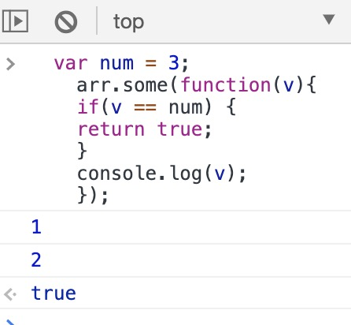
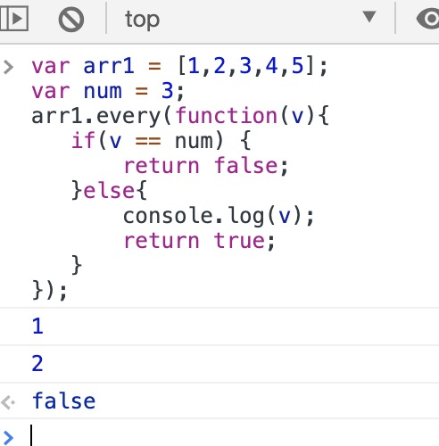

--some()当内部return true时，退出整个循环
var arr = [1,2,3,4,5]; var num = 3; arr.some(function(v){ if(v == num) { return true; } console.log(v); });

every()当内部return false时 退出整个循环
var arr = [1,2,3,4,5]; var num = 3; arr.every(function(v){ if(v == num) { return false; }else{ console.log(v); return true; } });
